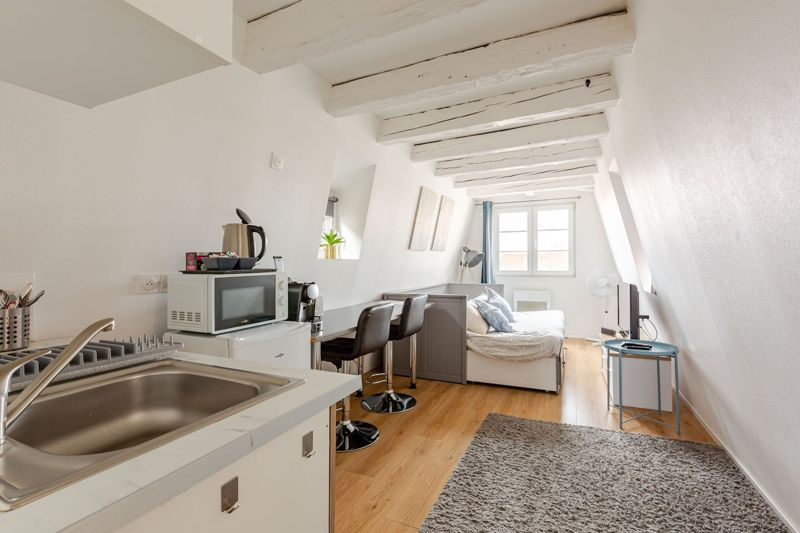
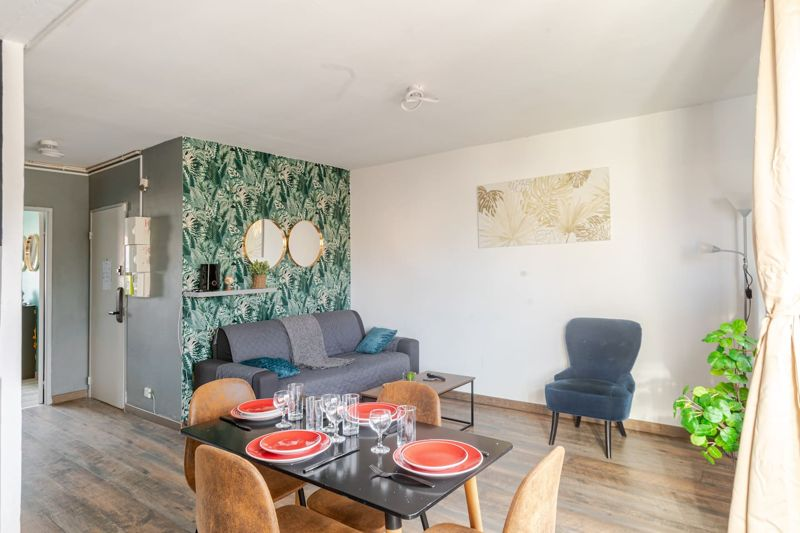
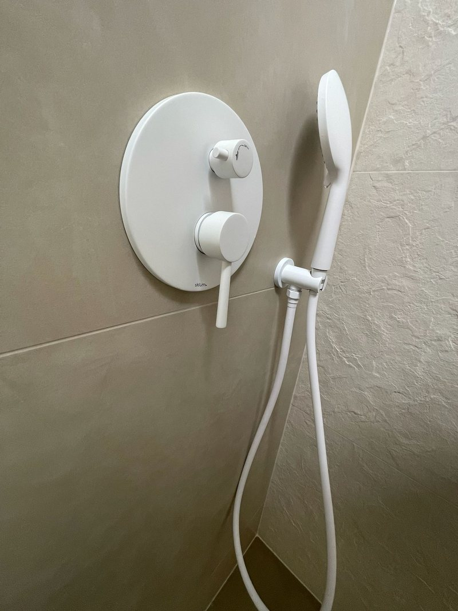

Questions fréquentes
Tout ce qu'il faut savoir avant d'arriver
Arrivée, linge, annulation, animaux : les réponses courtes, sans surprise.
Comment se passe l'arrivée ?
Arrivée 100 % autonome : serrure connectée Igloohome ou boîte à clés selon le logement. Les codes, photos et instructions sont envoyés avant l'arrivée.
Le linge est-il fourni ?
Oui : draps et serviettes fournis dans tous nos logements (1 serviette par voyageur).
Quelle est la politique d'annulation ?
Non remboursable moins de 30 jours avant l'arrivée. L'option « annulation prolongée » Airbnb (petit supplément) permet d'annuler gratuitement jusqu'à 24 h avant.
Peut-on fumer ?
Non, tous nos logements sont non-fumeurs à l'intérieur.
Les animaux sont-ils acceptés ?
Oui à Erstein, uniquement sur déclaration préalable. Pour les autres logements, demandez-nous sur Airbnb avant de réserver.
Y a-t-il un lit bébé ?
Oui, sur demande, à Colmar (et selon disponibilité dans les autres logements).
Les logements
Et si on choisissait ?

Colmar
Colmar — Petite Venise
Appartement lumineux à 2 pas du centre historique et de la Petite Venise.
Découvrir le logement
Erstein
Erstein — calme et gare
Appartement rénové 40 m² dans une ville calme à 20 min de Strasbourg en train.
Découvrir le logement
Schiltigheim
Le Brasseur
T2 de plain-pied 39 m² à Schiltigheim, à deux pas du Parlement européen et des commerces.
Découvrir le logement
Illkirch-Graffenstaden
Cocon
Appartement design de 120 m² à Illkirch-Graffenstaden, au sud de Strasbourg, tramway direct vers le centre-ville.
Découvrir le logement